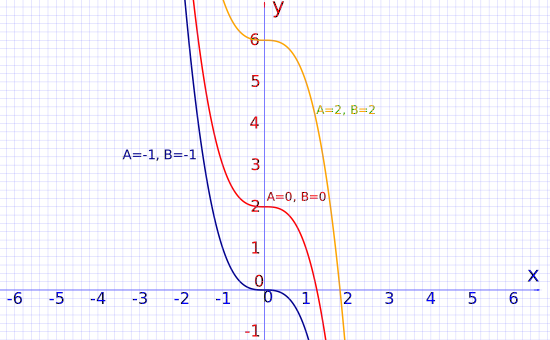

Method of Undetermined Coefficients
This page is about second order differential equations of this type:
d2ydx2 + P(x)dydx + Q(x)y = f(x)
where P(x), Q(x) and f(x) are functions of x.
Please read Introduction to Second Order Differential Equations first, it shows how to solve the simpler "homogeneous" case where f(x)=0
Two Methods
There are two main methods to solve these equations:
Undetermined Coefficients (that we learn here) which only works when f(x) is a polynomial, exponential, sine, cosine or a linear combination of those.
Variation of Parameters which is a little messier but works on a wider range of functions.
Undetermined Coefficients
To keep things simple, we only look at the case:
d2ydx2 + pdydx + qy = f(x)
where p and q are constants.
The complete solution to such an equation can be found by combining two types of solution:
- The general solution of the homogeneous equation
- Particular solutions of the non-homogeneous equation
d2ydx2 + pdydx + qy = 0
d2ydx2 + pdydx + qy = f(x)
Note that f(x) could be a single function or a sum of two or more functions.
Once we have found the general solution and all the particular solutions, then the final complete solution is found by adding all the solutions together.
Example 1: d2ydx2 − y = 2x2 − x − 3
(For the moment trust me regarding these solutions)
The homogeneous equation d2ydx2 − y = 0 has a general solution
y = Aex + Be-x
The non-homogeneous equation d2ydx2 − y = 2x2 − x − 3 has a particular solution
y = −2x2 + x − 1
So the complete solution of the differential equation is
y = Aex + Be-x − 2x2 + x − 1
Let’s check if the answer is correct:
y = Aex + Be-x − 2x2 + x − 1
dydx = Aex − Be-x − 4x + 1
d2ydx2 = Aex + Be-x − 4
Putting it together:
d2ydx2 − y = Aex + Be-x − 4 − (Aex + Be-x − 2x2 + x − 1)
= Aex + Be-x − 4 − Aex − Be-x + 2x2 − x + 1
= 2x2 − x − 3
So in this case we have shown that the answer is correct, but how do we find the particular solutions?
We can try guessing ... !
This method is only easy to apply if f(x) is one of the following:
And here is a guide to help us with a guess:
| f(x) | y(x) guess |
|---|---|
| aebx | Aebx |
| a cos(cx) + b sin(cx) | A cos(cx) + B sin(cx) |
| kxn (n=0, 1, 2,...) | Anxn + An−1xn−1 + … + A0 |
But there is one important rule that must be applied:
You must first find the general solution to the homogeneous equation.
You will see why as we continue on.
Example 1 (again): Solve d2ydx2 − y = 2x2 − x − 3
1. Find the general solution of
d2ydx2 − y = 0
The characteristic equation is: r2 − 1 = 0
Factor: (r − 1)(r + 1) = 0
r = 1 or −1
So the general solution of the differential equation is
y = Aex + Be-x
2. Find the particular solution of
d2ydx2 − y = 2x2 − x − 3
We make a guess:
Let y = ax2 + bx + c
dydx = 2ax + b
d2ydx2 = 2a
Substitute these values into d2ydx2 − y = 2x2 − x − 3
2a − (ax2 + bx + c) = 2x2 − x − 3
2a − ax2 − bx − c = 2x2 − x − 3
− ax2 − bx + (2a − c) = 2x2 − x − 3
Equate coefficients:
| x2 coefficients: | −a = 2 ⇒ a = −2 ... (1) |
| x coefficients: | −b = −1 ⇒ b = 1 ... (2) |
| Constant coefficients: | 2a − c = −3 ... (3) |
Substitute a = −2 from (1) into (3)
−4 − c = −3
c = −1
a = −2, b = 1 and c = −1, so the particular solution of the differential equation is
y = − 2x2 + x − 1
Finally, we combine our two answers to get the complete solution:
y = Aex + Be-x − 2x2 + x − 1
Why did we guess y = ax2 + bx + c (a quadratic function) and not include a cubic term (or higher)?
The answer is simple. The function f(x) on the right side of the differential equation has no cubic term (or higher); so, if y did have a cubic term, its coefficient would have to be zero.
Hence, for a differential equation of the type d2ydx2 + pdydx + qy = f(x) where f(x) is a polynomial of degree n, our guess for y will also be a polynomial of degree n.
Example 2: Solve
6d2ydx2 − 13dydx − 5y = 5x3 + 39x2 − 36x − 10
1. Find the general solution of 6d2ydx2 − 13dydx − 5y = 0The characteristic equation is: 6r2 − 13r − 5 = 0
Factor: (2r − 5)(3r + 1) = 0
r = 52 or −13
So the general solution of the differential equation is
y = Ae(5/2)x + Be(−1/3)x
2. Find the particular solution of 6d2ydx2 − 13dydx − 5y = 5x3 + 39x2 − 36x − 10
Guess a cubic polynomial because 5x3 + 39x2 − 36x − 10 is cubic.
Let y = ax3 + bx2 + cx + d
dydx = 3ax2 + 2bx + c
d2ydx2 = 6ax + 2b
Substitute these values into 6d2ydx2 − 13dydx −5y = 5x3 + 39x2 −36x −10
6(6ax + 2b) − 13(3ax2 + 2bx + c) − 5(ax3 + bx2 + cx + d) = 5x3 + 39x2 − 36x − 10
36ax + 12b − 39ax2 − 26bx − 13c − 5ax3 − 5bx2 − 5cx − 5d = 5x3 + 39x2 − 36x − 10
−5ax3 + (−39a − 5b)x2 + (36a − 26b − 5c)x + (12b − 13c − 5d) = 5x3 + 39x2 − 36x − 10
Equate coefficients:
| x3 coefficients: | −5a = 5 ⇒ a = −1 |
| x2 coefficients: | −39a −5b = 39 ⇒ b = 0 |
| x coefficients: | 36a −26b −5c = −36 ⇒ c = 0 |
| Constant coefficients: | 12b − 13c −5d = −10 ⇒ d = 2 |
So the particular solution is:
y = −x3 + 2
Finally, we combine our two answers to get the complete solution:
y = Ae(5/2)x + Be(−1/3)x − x3 + 2
And here are some sample curves:

Example 3: Solve d2ydx2 + 3dydx − 10y = −130cos(x) + 16e3x
In this case we need to solve three differential equations:
1. Find the general solution to d2ydx2 + 3dydx − 10y = 0
2. Find the particular solution to d2ydx2 + 3dydx − 10y = −130cos(x)
3. Find the particular solution to d2ydx2 + 3dydx − 10y = 16e3x
So, here’s how we do it:
1. Find the general solution to d2ydx2 + 3dydx − 10y = 0
The characteristic equation is: r2 + 3r − 10 = 0
Factor: (r − 2)(r + 5) = 0
r = 2 or −5
So the general solution of the differential equation is:
y = Ae2x+Be-5x
2. Find the particular solution to d2ydx2 + 3dydx − 10y = −130cos(x)
Guess. Since f(x) is a cosine function, we guess that y is a linear combination of sine and cosine functions:
Try y = acos(x) + bsin(x)
dydx = − asin(x) + bcos(x)
d2ydx2 = − acos(x) − bsin(x)
Substitute these values into d2ydx2 + 3dydx − 10y = −130cos(x)
−acos(x) − bsin(x) + 3[−asin(x) + bcos(x)] − 10[acos(x)+bsin(x)] = −130cos(x)
cos(x)[−a + 3b − 10a] + sin(x)[−b − 3a − 10b] = −130cos(x)
cos(x)[−11a + 3b] + sin(x)[−11b − 3a] = −130cos(x)
Equate coefficients:
| Coefficients of cos(x): | −11a + 3b = −130 ... (1) |
| Coefficients of sin(x): | −11b − 3a = 0 ... (2) |
From equation (2), a = −11b3
Substitute into equation (1)
121b3 + 3b = −130
130b3 = −130
b = −3
a = −11(−3)3 = 11
So the particular solution is:
y = 11cos(x) − 3sin(x)
3. Find the particular solution to d2ydx2 + 3dydx − 10y = 16e3x
Guess.
Try y = ce3x
dydx = 3ce3x
d2ydx2 = 9ce3x
Substitute these values into d2ydx2 + 3dydx − 10y = 16e3x
9ce3x + 9ce3x − 10ce3x = 16e3x
8ce3x = 16e3x
c = 2
So the particular solution is:y = 2e3x
Finally, we combine our three answers to get the complete solution:
y = Ae2x + Be-5x + 11cos(x) − 3sin(x) + 2e3x
Example 4: Solve d2ydx2 + 3dydx − 10y = −130cos(x) + 16e2x
This is exactly the same as Example 3 except for the final term, which has been replaced by 16e2x.
So Steps 1 and 2 are exactly the same. On to step 3:
3. Find the particular solution to d2ydx2 + 3dydx − 10y = 16e2x
Guess.
Try y = ce2x
dydx = 2ce2x
d2ydx2 = 4ce2x
Substitute these values into d2ydx2 + 3dydx − 10y = 16e2x
4ce2x + 6ce2x − 10ce2x = 16e2x
0 = 16e2x
Oh dear! Something seems to have gone wrong. How can 16e2x = 0?
Well, it can’t, and there is nothing wrong here except that there is no particular solution to the differential equation d2ydx2 + 3dydx − 10y = 16e2x
...Wait a minute!The general solution to the homogeneous equation d2ydx2 + 3dydx − 10y = 0, which is y = Ae2x + Be-5x, already has a term Ae2x, so our guess y = ce2x already satisfies the differential equation d2ydx2 + 3dydx − 10y = 0 (it was just a different constant.)
So we must guess y = cxe2x
Let's see what happens:
dydx = ce2x + 2cxe2x
d2ydx2 = 2ce2x + 4cxe2x + 2ce2x = 4ce2x + 4cxe2x
Substitute these values into d2ydx2 + 3dydx − 10y = 16e2x
4ce2x + 4cxe2x + 3ce2x + 6cxe2x − 10cxe2x = 16e2x
7ce2x = 16e2x
c = 167
So in the present case our particular solution is
y = 167xe2x
Thus, our final complete solution in this case is:y = Ae2x + Be-5x +
11cos(x) − 3sin(x) + 167xe2x
Example 5: Solve d2ydx2 − 6dydx + 9y = 5e-2x
1. Find the general solution to d2ydx2 − 6dydx + 9y = 0
The characteristic equation is: r2 − 6r + 9 = 0
(r − 3)2 = 0
r = 3, which is a repeated root.
Then the general solution of the differential equation is y = Ae3x + Bxe3x
2. Find the particular solution to d2ydx2 − 6dydx + 9y = 5e-2x
Guess.
Try y = ce-2x
dydx = −2ce-2x
d2ydx2 = 4ce-2x
Substitute these values into d2ydx2 − 6dydx + 9y = 5e-2x
4ce-2x + 12ce-2x + 9ce-2x = 5e-2x
25e-2x = 5e-2x
c = 15
So the particular solution is:
y= 15e-2x
Finally, we combine our two answers to get the complete solution:
y= Ae3x + Bxe3x + 15e-2x
Example 6: Solve d2ydx2 + 6dydx + 34y = 109cos(5x)
1. Find the general solution to d2ydx2 + 6dydx + 34y = 0
The characteristic equation is: r2 + 6r + 34 = 0
Use the quadratic equation formula
r = −b ± √(b2 − 4ac)2a
with a = 1, b = 6 and c = 34
So
r = −6 ± √[62 − 4(1)(34)]2(1)
r = −6 ± √(36−136)2
r = −6 ± √(−100)2
r = −3 ± 5i
And we get:
y =e-3x(Acos(5x) + iBsin(5x))
2. Find the particular solution to d2ydx2 + 6dydx + 34y = 109sin(5x)Since f(x) is a sine function, we assume that y is a linear combination of sine and cosine functions:
Guess.
Try y = acos(5x) + bsin(5x)
Note: since we do not have sin(5x) or cos(5x) in the solution to the homogeneous equation (we have e-3xcos(5x) and e-3xsin(5x), which are different functions), our guess should work.
Let’s continue and see what happens:
dydx = −5asin(5x) + 5bcos(5x)
d2ydx2 = −25acos(5x) − 25bsin(5x)
Substitute these values into d2ydx2 + 6dydx + 34y = 109sin(5x)
−25acos(5x) − 25bsin(5x) + 6[−5asin(5x) + 5bcos(5x)] + 34[acos(5x) + bsin(5x)] = 109sin(5x)
cos(5x)[−25a + 30b + 34a] + sin(5x)[−25b − 30a + 34b] = 109sin(5x)
cos(5x)[9a + 30b] + sin(5x)[9b −
30a] = 109sin(5x)
Equate coefficients of cos(5x) and sin(5x):
| Coefficients of cos(5x): | 9a + 30b = 0 ... (1) |
| Coefficients of sin(5x): | 9b − 30a = 109 ... (2) |
From equation (1), b = −3a10
Substitute into equation (2)
9(−3a10) − 30a = 109
−27a − 300a = 1090
−327a = 1090
a = −103
b = 1
So the particular solution is:y = −103cos(5x) + sin(5x)
Finally, we combine our answers to get the complete solution:
y = e-3x(Acos(5x) + iBsin(5x)) − 103cos(5x) + sin(5x)